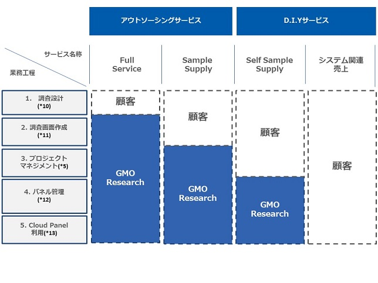
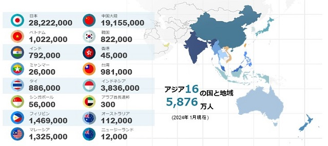
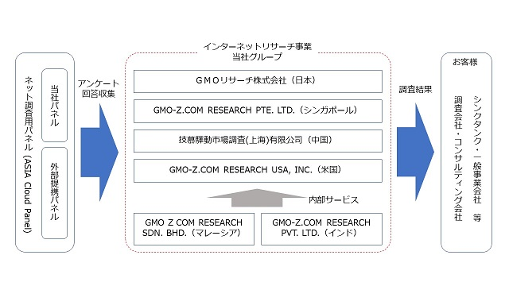

(注) １．従業員数は就業人員であり、臨時雇用者(契約社員、アルバイト、人材派遣会社からの派遣社員を含む)は、１年間の平均人員を［ ］外数で記載しております。
２．「収益認識に関する会計基準」(企業会計基準第29号2020年３月31日)等を第21期の期首から適用しており、第21期以降に係る主要な経営指標等については、当該会計基準等を適用した後の指標等となっております。
（注）１. 従業員数は就業人員であり、臨時雇用者(契約社員、アルバイト、人材派遣会社からの派遣社員を含む)は、１年間の平均人員を[ ]外数で記載しております。
２．最高株価及び最低株価は、2022年４月３日以前は東京証券取引所マザーズにおけるものであり、2022年４月４日以降は東京証券取引所グロース市場におけるものであります。
３．「収益認識に関する会計基準」(企業会計基準第29号2020年３月31日)等を第21期の期首から適用しており、第21期以降に係る主要な経営指標等については、当該会計基準等を適用した後の指標等となっております。
当社グループは、当社（ＧＭＯリサーチ株式会社）及び、当社の連結子会社であるGMO-Z.COM RESEARCH PTE. LTD.、技慕驛動市場調査(上海)有限公司、GMO-Z.COM RESEARCH PVT. LTD.、GMO Z COM RESEARCH SDN. BHD.、GMO-Z.COM RESEARCH USA, INC.の計６社で構成されており、インターネットを活用した市場調査活動における調査、集計、分析業務の受託を行うインターネットリサーチ事業を展開しております。
具体的には、一般事業会社、学校、官公庁（以下「一般事業会社」）などは、「自社商品の市場における位置付け」「新商品のニーズ」「広告・キャンペーンの施策やその効果」「商品に対する満足度」など、一般消費者の行動や意識の実態・変化を的確に捉えるために市場調査活動を行っており、その市場調査には、一般消費者と直接お会いしてアンケートやインタビューに回答していただく方法と、インターネット上でアンケートに回答いただく方法があります。
当社グループの強みは、調査を専門とする調査会社に対して、インターネット上で調査のすべてを完結できるプラットフォームを提供していることです。また、当社グループは、調査対象者に対してアンケートへの参加を依頼し、回答者には謝礼としてポイントを付与しております。回答者はまとまったポイントを現金・商品券・商品などに交換することができます。プラットフォームは、調査会社・シンクタンク・コンサルティング会社など、いわゆる調査のプロフェッショナルが多数利用するほか、だれでも手軽に使えるリサーチツールへのニーズがある一般事業会社が利用しております。また、ネット調査用パネル(*１)数は、アジア最大級となっております。
現在の主要なサービスは、日本、アジア、欧米の調査企業から「当社が考えるリサーチ業務のすべて(*２)、もしくは一部を当社でカバーしてほしい」といったニーズに応えるためのアウトソーシングサービスと、調査会社が当社のプラットフォームを利用して自ら調査を実施するD.I.Yサービスの２つです。
当社グループのサービス内容は以下のとおりであります。
業務工程とサービスの関係における当社グループのカバー範囲は下図のとおりであります。

特に当社グループのプラットフォームは、アウトソーシングサービス受託時の当社グループの業務システムとして利用しつつ、お客様には、D.I.Yツールとしても利用いただいております。
(注) *１．ネット調査用パネル
調査用パネルとは、インターネットを通じて調査に回答する一般消費者やビジネスパーソンのことを意味します。当社グループは、その集合体をASIA Cloud Panelと称しております。
*２．リサーチ業務のすべて
当社グループの事業範囲であるリサーチ業務とは、調査画面設計(アンケート作成)及びプロジェクトマネジメント(対象者選定・アンケートの配信・回収・集計・レポート作成)を意味します。
*３．MO Survey byGMO
消費者への定量調査をオンラインで完結できるクラウドソリューションです。
*４．MO Insights byGMO
消費者への定性調査をオンラインで完結できるクラウドソリューションです。
*５．プロジェクトマネジメント
対象者選定・アンケートの配信・回収・集計・レポート作成といったプロジェクト内の一連の作業工程について、誰が、いつ、どこで、何を、どのように行うかを指揮・管理することです。
*６．Self Sample Supply
MO Lite アンケート byGMOは、GMO Askとしてリニューアルし、MO Lite インタビュー byGMOは、2023年9月にサービス停止したため、表から削除しました。
*７．システム関連売上
D.I.Yサービスのシステム関連売上は、当社グループはシステムのみを提供するビジネスモデルです。
*８．GMO Market Observer
当社グループが開発・提供しているインターネット上でリサーチ業務のすべてを完結できるリサーチソリューションプラットフォームの総称であり、「Market Observer」は当社の登録商標です(登録番号5671869号)。
*９．GMO Ask
顧客が利用するDIY型（セルフ型）アンケートツールから、国内・アジア最大級の調査用パネルへのアンケート調査ができるサービスです。
*10．調査設計
調査の企画段階で決めた調査目的や調査事項等をもとに、調査の対象者に対して具体的にどのような質問をして、どのように答えてもらうのかを、いろいろな場合にあてはめて考え、質問とその答えを書くための調査票を作成することです。
*11．調査画面作成
調査の設計段階で作成した調査票をオンラインで回答できるように、アンケート作成システムを使ってオンライン上で調査画面を作成することです。
*12．パネル管理
調査に協力することに同意した一般消費者やビジネスパーソンの入退会管理、ポイント交換管理、問合せ管理、品質管理、キャンペーン企画等を行うことです。
*13．Cloud Panel利用
調査に協力することに同意したパネルを抱える他の既存媒体とネットワークで結ぶことで、仮想的な一つのパネルを作りだし、自社システムで一元管理を行います。自社システムの利用のみで、他媒体を含んだパネル全体に対して、調査を依頼し、回答を収集することができます。
当社グループの顧客は、調査会社・シンクタンク・コンサルティング会社などの調査のプロフェッショナル及び一般事業会社であります。当社グループのサービス内容のうち、「MO Survey byGMO」「MO Insights byGMO」および「GMO Market Observer」は調査のプロフェッショナルおよび一般事業会社の両者向けのサービスでありますが、「GMO Ask」、「その他サービス」は主に一般事業会社向けのサービスであります。
当社グループでは国内の調査会社および一般事業会社に対して、日本を含むアジアのインターネットリサーチを販売しております。2023年12月期の国内顧客へのインターネットリサーチ売上高は3,697,249千円(前年同期比0.2%減)であり、連結売上構成比で72.3%となりました。
当社グループでは欧米を中心に、主に世界中の調査会社に対して、日本を含むアジアのインターネットリサーチを販売しております。昨今、アジア地域の需要の増加に対応するため、シンガポール、中国及びマレーシアに、販売及びパネルの仕入を目的とした会社を設立しております。また、欧米アジアのビジネス機会を取り込むため、24時間対応のオペレーションセンターをインドに、米国顧客向けの販売会社を米国に設立しております。2023年12月期の海外顧客へのインターネットリサーチ売上高は1,419,953千円(前年同期比5.0%減)であり、連結売上構成比で27.7%となりました。
当社グループは、国内調査パネルと海外調査パネルを保有しております。
当社グループの国内調査パネルは、当社の管理運営するinfoQと、提携先が保有する国内調査パネルをあわせてJapan Cloud Panelとして2,822万人(2024年１月末現在)を突破し、国内最大規模となっております。
当社グループは、当社グループの品質管理基準を満たした外部パネルとシステム的な連携を実施し、ASIA Cloud Panelとして15の国と地域(中国、韓国、インド、ベトナム、タイ、台湾、フィリピン、マレーシア、香港、シンガポール、インドネシア、オーストラリア、ミャンマー、ニュージーランド、アラブ首長国連邦)において、3,053万人以上のパネルを提供しております(2024年１月末現在)。
なお下記の図は2024年１月末時点の数値を記載しております。

(3) 当社グループの調査パネル品質基準について
当社グループは、「パネル品質」「実査工程品質」「システム品質」の三位一体で品質を高めることで、最終納品物であるアンケートの「回答結果の品質向上」に努めています。
特に「パネル品質」においては、世界の調査業界のデファクトスタンダードに適応させながら当社グループ独自の「品質管理基準書」を作成し当社グループのウェブサイトで情報開示するとともに、それに沿った社内運用を実施しております。具体的には、当社グループの特徴であるCloud Panelは、事前にユーザーの重複を排除する仕組みを導入しています。また、アンケート回答者の回答データをチェックし、当社グループが定める基準によって不適切な回答者を排除するなど、品質管理に関する取り組みを積極的に行っております。
品質管理の詳細につきましては、当社HP上で掲載しております「品質管理基準書」をご確認ください。
(当社HP上のURL)
https://gmo-research.jp/company/quality
当社グループの事業の系統図は以下のとおりであります。
［事業系統図］

(注) １．ＧＭＯインターネットグループ株式会社は、有価証券報告書の提出会社であります。
２.「議決権の所有(被所有)割合」欄の( )書きは、間接所有の内書であります。
2023年12月31日現在
(注) １．従業員数は就業人員(役員を除く正社員数)であります。
２. 従業員数欄の[ ]内は外数であり、年間の臨時従業員の平均雇用人員であります。
３．臨時従業員には、契約社員、アルバイト、人材派遣会社からの派遣社員を含みます。
４．全社(共通)として記載されている従業員数は、管理部門に所属しているものであります。
2023年12月31日現在
(注) １．従業員数は就業人員(役員を除く正社員数)であります。
２．従業員数欄の[ ]内は外数であり、年間の臨時従業員の平均雇用人員であります。
３．臨時従業員には、契約社員、アルバイト、人材派遣会社からの派遣社員を含みます。
４. 平均年間給与は、賞与及び基準外賃金を含んでおります。
５. 全社(共通)として記載されている従業員数は、管理部門に所属しているものであります。
労働組合は結成されておりませんが、労使関係は良好に推移しております。
提出会社 2023年12月31日現在
(注)１.「女性の職業生活における活躍の推進に関する法律」(平成27年法律第64号)の規定に基づき算出したもの
であります。
２.「育児休業、介護休業等育児又は家族介護を行う労働者の福祉に関する法律」(平成３年法律第76号)の規
定に基づき、「育児休業、介護休業等育児又は家族介護を行う労働者の福祉に関する法律施行規則」(平
成３年労働省令第25号)第71条の４第１号における育児休業等の取得割合を算出したものであります。